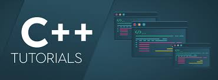

Python is an interpreted, high-level, general-purpose programming language.
Created by Guido van Rossum and first released in 1991, Python's design
philosophy emphasizes code readability with its notable use of significant whitespace.
Its language constructs andz object-oriented approach aim to help programmers write clear,
logical code for small and large-scale projects.
C++ programming language

C++ (/ˌsiːˌplʌsˈplʌs/) is a high-level, general-purpose programming language created by
Bjarne Stroustrup as an extension of the C programming language, or "C with Classes".
The language has expanded significantly over time, and modern C++ has object-oriented,
generic, and functional features in addition to facilities for low-level memory manipulation.
C# programming language
C# (pronounced see sharp, like the musical note C♯, but written with the number sign)[b]
is a general-purpose, multi-paradigm programming language encompassing strong typing,
lexically scoped, imperative, declarative, functional, generic, object-oriented (class-based),
and component-oriented programming disciplines.